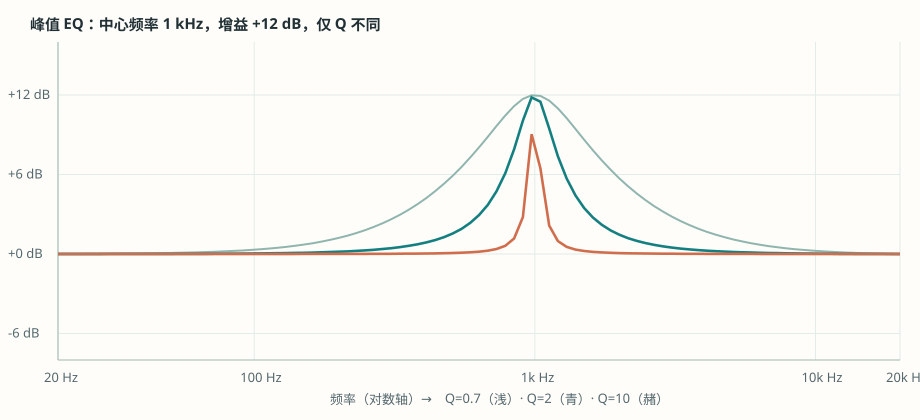
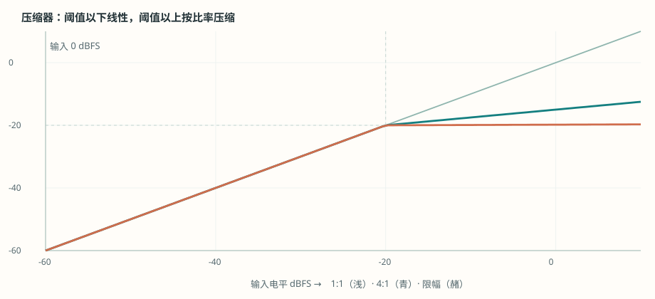
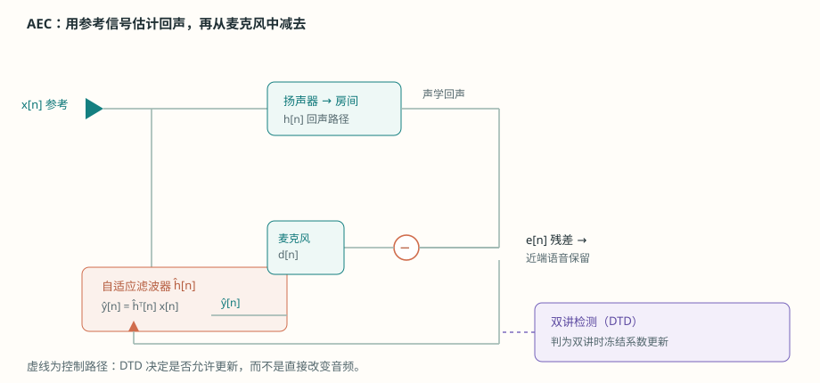

Applications · Audio / 23
音频信号处理：均衡、动态与回声消除
音频 DSP 的验收标准不是某个数值指标，而是人的听觉系统：它是一台动态范围超过 120 dB、对谐波失真低至零点几个百分点就敏感的频谱分析仪。
耳朵是验收标准
人耳的听觉范围约 20 Hz–20 kHz，可感知的动态范围超过 120 dB，对 0.1% 级别的谐波失真就可能察觉。这意味着音频链路里每一个算法——均衡、压缩、回声消除——都直接作用在感知系统上，任何处理不当产生的伪影都会被听出来。
与通信或雷达不同，音频处理的“指标达标”不等于“听感良好”：示波器上干净的波形可能听起来发闷，而带有大量非线性处理的信号反而更讨喜。因此本章先固定可测量的参数（采样率、位深、电平），再讨论三类核心模块，并始终区分可测量的数值结论与主观的听感倾向。
采样率、位深与 dBFS
先固定三个基本参数：采样率决定可表示的最高频率（Nyquist），位深决定量化噪声底，而数字域的电平以满刻度为参照。它们都不是任意取的：
| 参数 | 常见取值 | 典型场景 | 取值依据 |
|---|---|---|---|
| 采样率 | 44.1 kHz | CD、流媒体 | 人耳上限约 20 kHz，留出抗混叠过渡带 |
| 采样率 | 48 kHz | 影视、视频配音 | 与常用视频帧率整数对齐，便于音视频同步 |
| 采样率 | 96 kHz | 录音棚、Hi-Res | 给超声频段与抗混叠滤波器留更多余量 |
| 位深 | 16 bit | CD、流媒体 | 理想动态范围约 96 dB |
| 位深 | 24 bit | 录音、混音 | 约 144 dB，留足混音 headroom |
理想量化器的信噪比（满刻度正弦输入）满足：
式（1）：N 为位深。每增加 1 bit，动态范围约增加 6.02 dB；16 bit 对应约 98 dB 的理论上限。
另一个易混点：dB SPL 是物理声压级（0 dB SPL ≈ 20 μPa，130 dB SPL 接近痛阈），dBFS 是数字域相对满刻度的电平（0 dBFS 为全 1，超过即削波）。两者靠麦克风灵敏度桥接：灵敏度 -26 dBV/Pa 的麦克风在 94 dB SPL（1 Pa）下输出约 -26 dBFS 的电平。工程上通常让峰值不超过 -6 dBFS，为后续滤波器的通带纹波留 headroom。
参量均衡器
参量均衡器（PEQ）的核心不是“调高低音”，而是一组可独立配置中心频率、增益和带宽的双二阶（biquad）滤波器。同一套双二阶可以演化为峰值、搁架或高通/低通，实务中把它们级联起来构成多段 EQ。
通用双二阶的传递函数为：
式（2）：系数由模拟目标（f₀, Q, 增益）经双线性变换得到，需按第 10 章的预畸变处理频率映射。级联 M 个双二阶的总响应为各节响应之积。

Q = f₀/BW。Q=0.7 过渡平缓、影响宽频带；Q=10 形成很窄的尖峰，适合消除房间驻波等单频共鸣。曲线由 examples/23_audio.py 的 RBJ 系数模型计算，验证峰值恰为 12 dB、DC 与 Nyquist 增益为 1。三类常用的双二阶形态：
- 峰值（Peaking）：在中心频率提升或衰减，两侧回到 0 dB；频率给定后由 Q 控制带宽。
- 搁架（Shelf）：低频或高频整体抬升/衰减，用于响度补偿。
- 高通/低通：带指定阶数与 Q 的截止型滤波器，用于分频或切除无用频段。
多段 EQ 的典型实现是级联双二阶：输入 → Biquad₁ → Biquad₂ → … → Biquad_M → 输出。每个节只需 5 个系数与 2 个状态变量，模块化且易于旁路某一节。
动态范围处理
均衡在频域上整形，动态处理则在时间上控制电平：压缩器、限幅器、噪声门共用同一套“检测—增益计算—平滑—施加”的结构。
压缩器的静态输入-输出曲线是一个分段函数（以 dB 计）：
式（3）：T 为阈值，R 为压缩比率（4:1 即阈值上每升 4 dB 只出 1 dB）。R→∞ 退化为限幅器；噪声门则在 x<T 时把增益降到极低。

增益不会瞬时跳变，而是由两个时间常数控制：Attack（超过阈值后增益下降的快慢，约 1–50 ms）与 Release（回落后恢复的快慢，约 50 ms–2 s）。工程上用一阶迭代平滑：
式（4）：α 由 Attack/Release 时间常数与采样率决定。Attack 过快、Release 过慢会产生可闻的“抽吸”（pumping）。
检测方式另有区分：峰值检测取样本绝对值，响应快但易被单个尖峰误触发；RMS 检测取短时窗内的均方根，更接近人耳的响度感知，专业压缩器多用后者或混合方式。实际链路里，压缩器之后常接一个限幅器作为最后一道保险，防止任何残余尖峰削波。
声学回声消除
全双工通话要求近端与远端可以同时说话：麦克风里既要保留近端人声，又要消除扬声器泄漏回来的远端声音。后者就是回声消除（AEC）要解决的线性回声路径问题。

x[n] 作为参考；自适应滤波器 ĥ[n] 估计回声路径，输出 ŷ[n]；从麦克风信号 d[n] 减去后得到残差 e[n]，再由它驱动系数更新。虚线是控制路径：双讲检测决定是否允许更新。回声路径包括扬声器腔体、空气传播与麦克风振膜的联合响应，可以用一个 FIR 滤波器建模。其系数用 NLMS 递推更新（参见第 15 章）：
式（5）：μ 为步长，分母的输入能量归一化使步长对信号幅度不敏感。ε 防止除零。
工程上还有三个不能省略的环节：
- 双讲检测（DTD）：近端与远端同时说话时，残差
e[n]中混有近端语音；若继续用它更新滤波器，近端语音会被当作误差“误学”，导致系数发散。DTD 判为双讲时就冻结更新，只保留减法。 - 非线性处理（NLP）：自适应滤波器只能消除线性回声，扬声器的谐波失真等非线性成分须用中心削波或频谱衰减残留抑制，代价是近端小信号会有轻微“空洞”感。
- 子带处理：室内回声路径脉冲响应可达几十到上百毫秒，对应上千个抽头；NLMS 收敛速度与抽头数成反比，用子带自适应可降低每路阶数并分带使用不同步长。
延迟、缓冲与计算量
把算法串成实时链路后，缓冲大小、延迟与计算量三者不可兼得。缓冲越小，算法延迟越低，但单位时间要处理更多帧，计算量上升；缓冲越大则相反。
| 设计参数 | 小缓冲（≈ 64 样本） | 大缓冲（≈ 1024 样本） |
|---|---|---|
| 算法延迟 @48 kHz | 约 1.3 ms | 约 21 ms |
| 频率分辨率 | 粗（约 750 Hz/bin） | 细（约 46.9 Hz/bin） |
| 单位时间计算量 | 高（帧多） | 低 |
| 典型场景 | 通话 AEC、监听返送 | 音乐播放、后期 |
表中延迟按块长除以采样率估算（64/48000 ≈ 1.33 ms，1024/48000 ≈ 21.3 ms），未计入算法内部开销。人类对往返音频延迟的感知阈值大致在 10 ms 量级：超过这一量级，交互与监听就会明显受影响。这是实时通话系统必须使用小缓冲、从而必须做 AEC 的原因。
交互：Q 值与峰值响应
下面用同一组 RBJ 系数（中心 1 kHz、增益 +12 dB、采样率 48 kHz）画出峰值滤波器响应。拖动滑块改变 Q：观察峰宽与带宽如何随之变化。
动手验证：改变峰值滤波器的 Q
交互仅辅助观察；式（2）与确定性程序在 JS 关闭时仍可独立理解。
完整可执行例程（23_audio.py）：断言 1 kHz 峰值恰为 12.0000 dB，DC 与 Nyquist 增益为 0 dB，4:1 压缩器静态曲线取值正确，限幅器不超天花板 -0.1 dBFS。
边界与失效模式
- 低频高 Q 的系数量化：极点靠近单位圆，固定点下微小系数误差就可能造成响应偏移甚至不稳定；需改用转置结构并加宽内部累加。
- 级联噪声增益：多段 EQ 级联后，各节通带纹波可能叠出不可忽视的总峰凸，破坏 headroom。
- DTD 漏判：双讲检测漏判（误以为只有远端）会让近端语音驱动更新，导致滤波器发散；误判则为远端回声泄漏。
- 非线性残留：NLP 削波过猛会让近端语音出现“空洞”或调制噪声；过弱则残留回声可闻。
- 延迟预算：大缓冲降低计算量却拉高延迟；AEC 必须在小缓冲下运行，而滤波器阶数又受回声路径长度限制。
- 削波与溢出：任何一级增益超过 0 dBFS 都会削波；定点实现还需单独防范累加器溢出（参见第 20 章）。
自检：为何低频高 Q 的峰值滤波器更难用定点实现？双讲时为什么必须冻结 NLMS 更新？限幅器与 4:1 压缩器的静态曲线差别在哪里？
参考资料
- Robert Bristow-Johnson · Audio EQ Cookbook（W3C 归档）：峰值/搁架双二阶系数的闭式与预畸变约定。
- ITU-T G.168 · Digital network echo cancellers：回声消除器的工作流程、双讲处理与残留回声抑制要求。
- MIT OCW · Discrete-Time Signal Processing：量化噪声、动态范围与滤波器结构与第 10/15/20 章共用。